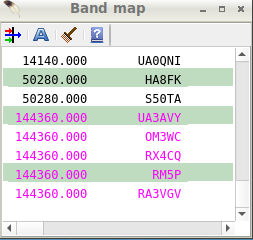

|
WARNING! Backup your data often! BACKUP your log directory at the end of EVERY session! All that you need to backup and store in a safe place is the log database directory located in the ~/.config/cqrlog/database folder, or you can enable the autobackup function in Preferences. This autobackup function creates an ADIF file with a backup of your log. |
| < Prev | [Menu] | Next > |


 |
Our tip: For a nice looking cluster window, choose a fixed-width font. We prefer Monospace Regular or Onuava but also Courier works nicely. Apple's Monaco font is also very nice and has a slashed zero. |
|
CQRLOG
has some predefined cluster nodes, however you will probably need to
set up a node of your preference. Click the 'Select' button and a list
of cluster node appears (see below). Click the 'New' option. Another dialog
appears (right).
 |
 Enter
the description (mostly the callsign). The 'Address' can be either an IP
or the name (see examples in the list). The 'Port' is given by a number.
Both address and port number can be obtained from the lists of DX cluster
nodes which are widely available on the internet.
Remember to put your callsign into the 'User name' field. This will enable autologin. The 'Password' column should remain empty in most cases because only few nodes are password protected. A detailed list of DX Cluster nodes can be found here (page created by Jim, AD1C). |
Bandmap Operation |
The main purpose of a bandmap is to combine the most interesting info from two sources - the DX Cluster and your personal notes. The bandmap combines a DX Cluster window with scratch pad memories available on many radios, however a band map is more comfortable by far - you don't need to manipulate subtle buttons on the radio panel, also the transceiver does not indicate what is in the scratch pad memory. The band map is operated from the keyboard and shows all at a glance. A valuable addition is the 'entries aging' option. If the bandmap entry is 'too' old, it changes color and after another period it disappears. This is different from the usual DX Cluster windows which display details of stations you have already worked, that are QRT or are not very interesting to you from another reason. A band map provides frequency-sorted and highly filtered details which don't scroll away (like the DX Cluster window does). There are two levels of filtering:
You can add your own information by writing the call into the logging
screen in the usual way (like logging). Then press Ctrl-A and the entry
will be added to the band map. Your own entries are marked with an asterisk (here MD0CCE).
You can return to the frequency anytime, the call will jump into its box in the same way
as if clicked from the DX Cluster window. Click on any entry, you are on, prepared for
QSO logging.
If the entry becomes older than the set time, it is displayed in a lighter color. Very old entries will disappear, also if you log the station, the corresponding entry disappears from the band map. The entries are always sorted by frequency. |
Xplanet support |
There is currently no other function than DX Cluster spot displaying in true azimuthal projection with correct angles (azimuth) and distances. Alternatively, a map without projection, ie. the globe as seen from space can be selected. |
Propagation indicator |
There is a simple window providing propagation indices as provided by the NOAA Space Weather Center. CQRLOG does not include a propagation forecast module but keen users can estimate many parameters just from the supplied data. |
Additional notes to a callsign
CQRLOG provides virtually unlimited support for additional notes which can be attached to a particular callsign (ie. an electronic QSL, a map showing the position, text files with antenna details etc). Assuming that external viewers for the text, PDF, image (jpg, png, gif) and HTML files are set up properly, all these files can be displayed. The main program tree contains the call_data subfolder where any callsign can have its own subfolder containing the files related to the call sign. The subfolder for a call sign must be created manually. If this subfolder exists, a special icon "Call has an attachment" appears at the bottom right corner of the Comment to callsign field in the main logging screen. Click this icon and another window Call attachment appears, showing the contents of the call sign subfolder. Highlight the file you want to view and either double click or use the View button to display the file. The number of call sign related subfolders in call_data is unlimited, also the call sign related subfolder may contain any number of files. |
 If the folder contains a file named "qsl_call_front.png" or
"qsl_call_front.jpg" (must be .png or .jpg), another icon "Call has a QSL image"
(ie. the ok2cqr subfolder contains qsl_ok2cqr_front.jpg). Click this icon and a QSL browser
appears showing the front of the QSL card. The "qsl_call_front.png" or "qsl_call_front.jpg"
is mandatory but there can also be a reverse side of QSL card with the
name "qsl_call_back.png" or "qsl_call_back.jpg". If this file is available, you can use
the "Front" and "Back" tabs to display both sides of the QSL card.
 |
| < Prev | [Menu] | Next > |